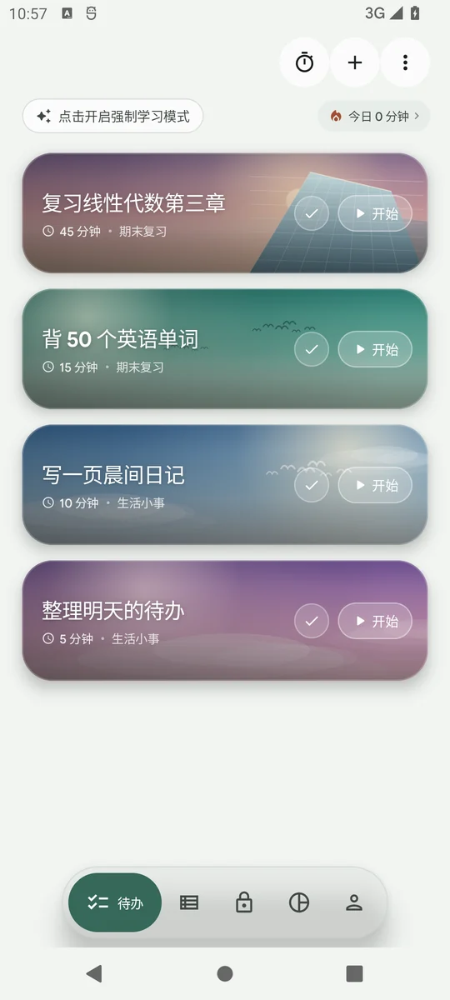
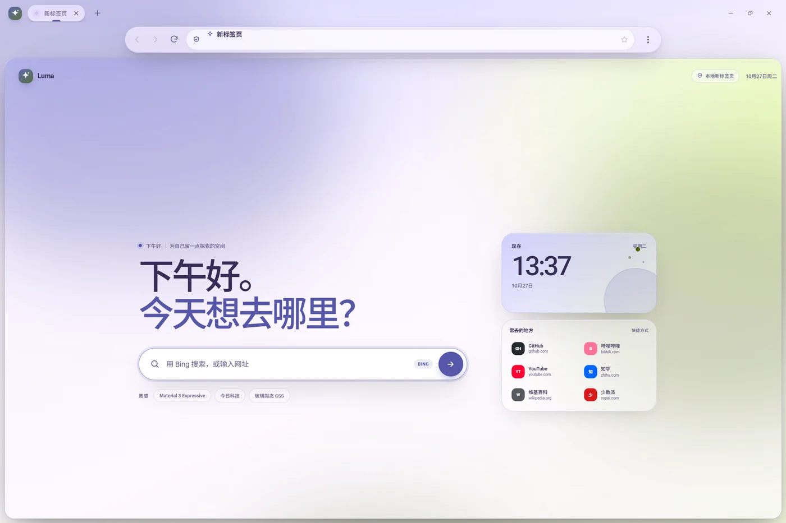
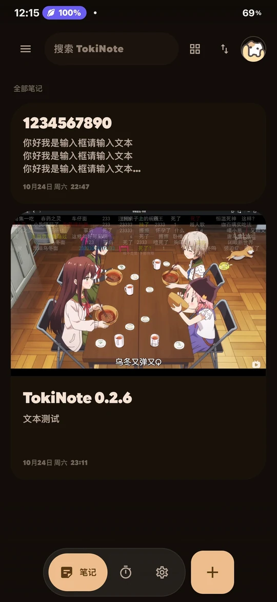

01
TokiTodo
待办、专注计时、手机锁与统计。把一天收进一个安静、顺手的地方。
今天4件待办

01 — Selected work
从待办、浏览器到笔记与字体。每一个项目，都从一个很小的「不舒服」开始。
待办、专注计时、手机锁与统计。把一天收进一个安静、顺手的地方。

把地址栏做成悬浮玻璃胶囊的浏览器。网页住进一张圆角卡片，工具栏在上下之间自由停靠。

悬浮地址栏 · 8 种主题色笔记、相册和专注，全部留在本机。除了检查更新，它不会主动联网。

一个给 One UI 换字体的资源库，也是一份持续生长的字体笔记。
还有 DSH、TokiDSH 和一些没做完的实验，散落在 GitHub。
去翻翻02 — About
我在 Android 上写 Kotlin 和 Jetpack Compose，喜欢把系统级的交互做得更有手感：大圆角、弹簧、动态色，还有能呼吸的留白。
我偏爱 local-first——数据先属于你，网络只是可选项。也花很多时间在字体和排版上，因为它们决定了界面开口说话的语气。
动效是标点，不是正文。所有弹性、形变和颜色，最后都要回到「这件事做完了没有」。
默认本地、默认可导出、默认不登录。少一个服务器，用户就少一份担心。
好的界面应该让人想多按一下。一个会回弹的按钮，有时比十行说明更有用。
让数据看起来不像报表，而像一天留下的痕迹。
滚动收起的手感还差一点，正在试更慢的弹簧。
下一款想认真研究的正文字体，还没有选好。
03 — Notes
关于界面、字体和做东西的方式。随手记下，不保证有用，但都是真的。
把卡片从 16dp 调到 28dp，不会自动变成 Expressive。它更像一种态度：允许形状、颜色和动效在关键动作上「过一点」，而在阅读和输入时退回去。
所以我现在会先问：这个界面最想让人感受到什么？再决定哪里该安静，哪里可以像弹簧一样弹出来。
「云同步」经常被当成默认答案，但它也意味着：多一个账号、多一次等待、多一个可能泄露的副本。对笔记和待办这种私人的东西，我宁愿先把本地做好。
网络应该是加速器，不是门槛。断网时还能不能打开、能不能导出、能不能删除干净，是我现在做每个功能都会先想的三件事。
字重、字宽、字距和收笔的弧度，都会偷偷决定一句话的情绪。工具类应用不一定都要「中性无表情」，它也可以有温度，只是不能牺牲可读性。
这也是我一直折腾 TokiFonts 的原因：换字体不只是换外观，而是在换一个应用说话的方式。
不一定秒回，但每条都会看。 · 通常会在 GitHub 活跃